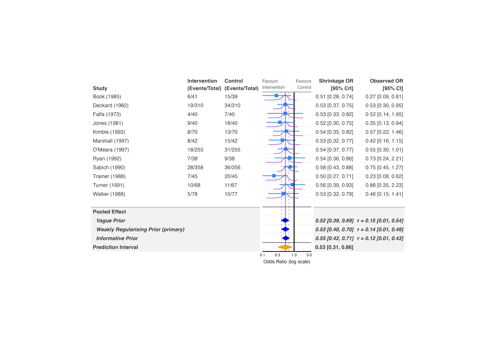
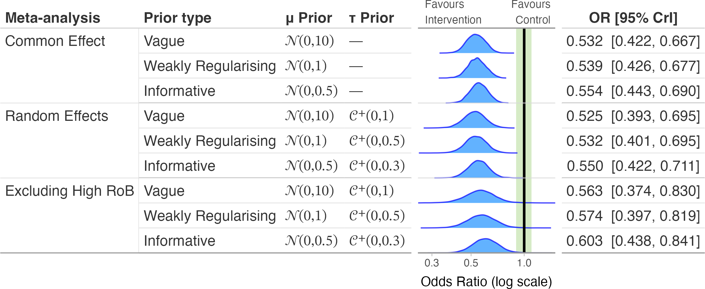
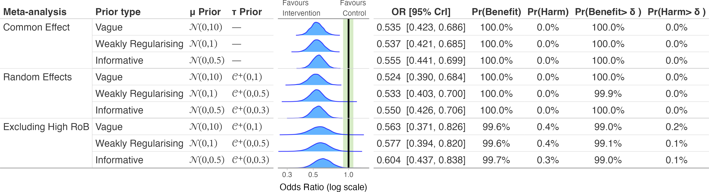
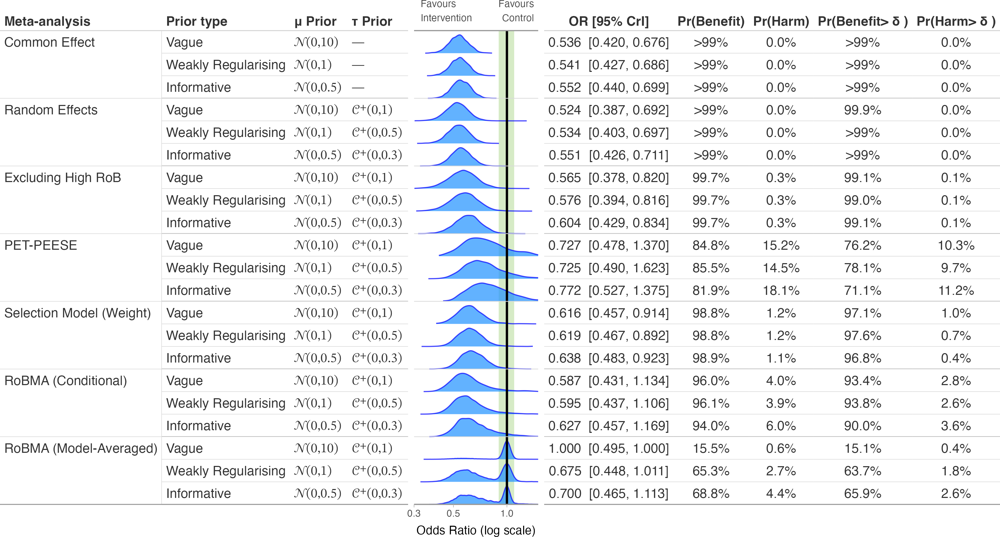
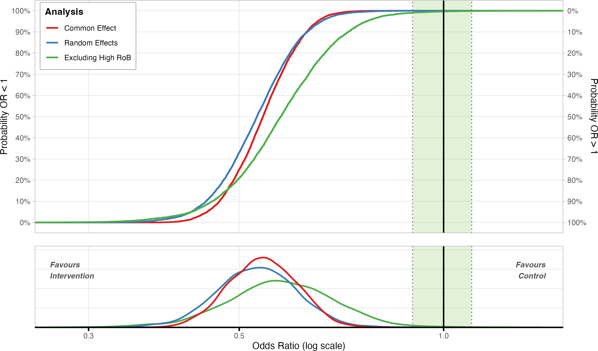
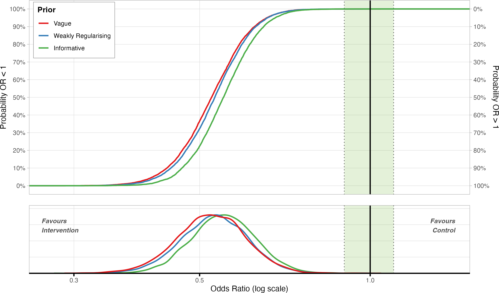

library(metafor)
library(brms)
library(bayesfoRest)
binary_es <- escalc(
measure = "OR",
ai = Event_Intervention, bi = Outcome_Intervention_No,
ci = Event_Control, di = Outcome_Control_No,
n1i = N_Intervention, n2i = N_Control,
data = binary_outcome) |>
dplyr::mutate(sei = sqrt(vi))
model_bin <- brm(
yi | se(sei) ~ 1 + (1 | Author),
family = gaussian(),
data = binary_es,
prior = prior(normal(0, 1), class = Intercept) +
prior(cauchy(0, 0.5), class = sd),
iter = 4000,
cores = parallel::detectCores(),
control = list(adapt_delta = 0.99),
silent = 2)Bayesian meta-analyses depend on priors for the pooled effect () and, for random-effects models, the heterogeneity (). bayesfoRest has four functions for showing how sensitive your conclusions are to those choices, plus to the broader modelling strategy (common- vs random-effects, excluding high-risk-of-bias studies, publication-bias adjustment):
-
forest_sens_plot()– a full forest plot, individual study rows and all, whose pooled-effect section shows one row per prior instead of a single estimate. Use this when you want the sensitivity comparison on the same plot as the underlying studies. -
sensitivity_plot()– pooled estimates only, compared across both priors and model strategies (random- vs common-effect, RoB exclusion, RoBMA bias adjustment) at once, as rows of densities or boxplots. -
ecdf_model_plot()– cumulative-distribution comparison of model strategies for a single, fixed prior. -
ecdf_prior_plot()– cumulative-distribution comparison of priors for a single, fixed model strategy.
All four take the same priors argument: a named list where each element has mu_prior/tau_prior built from the bf_*() constructors (bf_normal(), bf_half_cauchy(), etc. – see ?bf_priors for the full set and which backends can fit each one exactly). Refitting under each prior works for brmsfit, bayesmeta, meta_stan, and brma (a single RoBMA::brma() fit, not a RoBMA::RoBMA() model-averaged ensemble) models; other backends raise an error naming the unsupported model class.
Fit a model and specify priors
This vignette uses binary_outcome and a random-effects brms model, the same one used throughout the package’s other vignettes:
Priors are written once with the bf_*() helpers and reused across every function in this vignette:
priors <- list(
vague = list(
name = "Vague",
mu_prior = bf_normal(0, 10),
tau_prior = bf_half_cauchy(0, 1)),
weakreg = list(
name = "Weakly Regularising",
mu_prior = bf_normal(0, 1),
tau_prior = bf_half_cauchy(0, 0.5)),
informative = list(
name = "Informative",
mu_prior = bf_normal(0, 0.5),
tau_prior = bf_half_cauchy(0, 0.3))
)
forest_sens_plot(): sensitivity on the forest plot itself
forest_sens_plot() draws the study rows exactly like bayes_forest(), then replaces the usual single “Pooled Effect” row with one row per entry in priors, refitting model_bin under each. primary_prior flags which prior the model was actually fit with by appending “(primary)” to its row label; show_prediction (default TRUE) adds a prediction-interval row below the priors, automatically dropped for common-effect models since they have no :
forest_sens_plot(
model = model_bin,
data = binary_es,
measure = "OR",
study_var = Author,
year_var = Year,
n_ctrl = N_Control,
n_int = N_Intervention,
event_ctrl = Event_Control,
event_int = Event_Intervention,
priors = priors,
primary_prior = "weakreg",
study_output = "sq_whisker",
pooled_output = "diamond",
pred_output = "diamond",
xlim = c(0.1, 3.5)
)

study_output/pooled_output/pred_output work the same way as in bayes_forest(): each one independently chooses "density", "boxplot", "sq_whisker", or (for pooled_output/pred_output) "diamond".
sensitivity_plot(): compare priors and model strategies together
sensitivity_plot() drops the study rows and instead lays out pooled estimates as rows, one per prior within each model strategy you include. incl_random_effect (default TRUE) keeps the base random-effects refits; incl_common_effect = TRUE adds a common-effect refit under the same priors; exclude_high_rob = TRUE adds a section excluding studies with a high overall risk of bias (needs rob_var):
sensitivity_plot(
model = model_bin,
data = binary_es,
priors = priors,
measure = "OR",
rob_var = Overall,
exclude_high_rob = TRUE,
incl_common_effect = TRUE,
add_probs = FALSE,
xlim = c(0.25, 1.5),
add_null_range = TRUE
)

add_probs = TRUE adds columns for the posterior probability of benefit and no-benefit relative to null_value (and to null_range, if an add_null_range/ROPE is set):
sensitivity_plot(
model = model_bin,
data = binary_es,
priors = priors,
measure = "OR",
rob_var = Overall,
exclude_high_rob = TRUE,
incl_common_effect = TRUE,
add_probs = TRUE,
xlim = c(0.25, 1.5),
add_null_range = TRUE
)

Adding publication-bias adjustment from RoBMA
incl_robma, incl_robma_bma, incl_pet_peese, and incl_selection_weight add extra sections built from a separately fitted RoBMA object, passed in as robma_fit (a single fit, or a named list with one fit per prior level – here, one RoBMA::RoBMA() ensemble per entry in priors, using the same / specifications translated into RoBMA::prior() objects). incl_robma and incl_robma_bma are independent – see What the RoBMA sections show below for why you might want one without the other:
model_robma <- list(
vague = RoBMA(
data = binary_es, measure = "OR", yi = yi, sei = sei,
prior_effect = RoBMA::prior("normal", list(mean = 0, sd = 10)),
prior_heterogeneity = RoBMA::prior("cauchy", list(location = 0, scale = 1),
truncation = list(lower = 0, upper = Inf)),
model_type = "PSMA", seed = 1404),
weakreg = RoBMA(
data = binary_es, measure = "OR", yi = yi, sei = sei,
prior_effect = RoBMA::prior("normal", list(mean = 0, sd = 1)),
prior_heterogeneity = RoBMA::prior("cauchy", list(location = 0, scale = 0.5),
truncation = list(lower = 0, upper = Inf)),
model_type = "PSMA", seed = 1404),
informative = RoBMA(
data = binary_es, measure = "OR", yi = yi, sei = sei,
prior_effect = RoBMA::prior("normal", list(mean = 0, sd = 0.5)),
prior_heterogeneity = RoBMA::prior("cauchy", list(location = 0, scale = 0.3),
truncation = list(lower = 0, upper = Inf)),
model_type = "PSMA", seed = 1404)
)
sensitivity_plot(
model = model_bin,
data = binary_es,
priors = priors,
measure = "OR",
rob_var = Overall,
exclude_high_rob = TRUE,
incl_common_effect = TRUE,
robma_fit = model_robma,
incl_robma = TRUE,
incl_robma_bma = TRUE,
incl_pet_peese = TRUE,
incl_selection_weight = TRUE,
add_probs = TRUE,
xlim = c(0.1, 3.5),
add_null_range = TRUE
)

This is separate from using a brma fit directly as the base model – both are valid ways to bring RoBMA into a sensitivity analysis, and they answer different questions. Passing robma_fit adds bias-adjusted sections alongside your primary model’s own prior sensitivity. Passing a brma fit as model instead refits that model under each prior, the same way brms/bayesmeta/MetaStan do – useful when RoBMA’s single-model fit (rather than its full model-averaged ensemble) is your primary analysis. See vignette("RoBMA") for fitting details.
What the RoBMA sections show
incl_pet_peese and incl_selection_weight each add one bias-adjusted estimate per prior: the pooled effect conditional on that correction method being the right one and on a real effect being present. These are continuous, ordinary-looking posteriors, directly comparable to the Common/Random Effects rows above them.
incl_robma and incl_robma_bma each add one further row per prior, and they answer different questions – which is why they’re independent toggles rather than a single on/off switch:
-
RoBMA (Conditional),
incl_robma– the pooled effect given that an effect exists. Like PET-PEESE/Selection Model above, this is continuous. -
RoBMA (Model-Averaged),
incl_robma_bma– RoBMA’s full posterior, averaged across all models in its ensemble, including the ones with no effect at all. If the data don’t rule out “no effect”, some of that posterior mass sits exactly on the null value (OR/RR/HR/IRR = 1, MD/SMD =- rather than being spread continuously – a genuine feature of the result, not something to explain away.
A point mass like that can’t be drawn with an ordinary density estimate (it has zero width), so the Model-Averaged row’s null-valued draws are jittered by a small, deterministic amount before the usual density estimate runs – the same KDE as every other row, just fed slightly perturbed input. The jitter width is set from that row’s own continuous draws, so the resulting spike is sized like a feature of that row’s own posterior rather than an arbitrary constant, and the displayed spike-to-slab proportion falls straight out of the true draw counts, with no separate scaling applied. Pr(Benefit)/Pr(Harm) (and their null_range counterparts, shown when add_probs = TRUE) are computed directly from the (unjittered) draws, so they remain the most direct read on exactly how much posterior mass sits on each side of the null – >99% rather than 100.0%, since a continuous posterior probability is never exactly one.
If a model-averaged row’s spike makes the rest of that row hard to read – or, on the ECDF plots below, makes the whole curve hard to read once the spike’s jump dominates it – that’s a good reason to leave incl_robma_bma off and rely on incl_robma (RoBMA Conditional) alone; it’s always continuous.
ecdf_model_plot() and ecdf_prior_plot(): cumulative-distribution comparisons
Where sensitivity_plot() shows every prior-by-strategy combination at once, the ECDF functions fix one dimension and compare across the other, which reads more easily when you only care about one axis of sensitivity at a time.
ecdf_model_plot() fixes a single prior (prior, one entry’s worth of spec – not the whole priors list) and compares model strategies, coloured by section. Because it only ever shows one prior, robma_fit here is a single fitted RoBMA object rather than a named list:
This example includes both RoBMA sections (incl_robma, the continuous conditional estimate, and incl_robma_bma, the model-averaged one that can carry a point mass at the null) alongside Common/Random Effects and Excluding High RoB, so you can see all of them on one plot:
ecdf_model_plot(
model = model_bin,
data = binary_es,
prior = priors$weakreg,
measure = "OR",
rob_var = Overall,
exclude_high_rob = TRUE,
incl_common_effect = TRUE,
robma_fit = model_robma$weakreg,
incl_robma = TRUE,
incl_robma_bma = TRUE,
xlim = c(0.25, 1.5),
add_null_range = TRUE
)

ecdf_prior_plot() fixes a single section (section_to_plot, default "Random Effects") and compares priors instead, coloured by prior. Setting it to "RoBMA (Conditional)" compares how that RoBMA estimate shifts across priors – only incl_robma is needed here, since incl_robma_bma would just build model-averaged draws that section_to_plot then discards:
ecdf_prior_plot(
model = model_bin,
data = binary_es,
priors = priors,
measure = "OR",
section_to_plot = "RoBMA (Conditional)",
robma_fit = model_robma,
incl_robma = TRUE,
xlim = c(0.25, 1.5),
add_null_range = TRUE
)

Both accept the same section toggles as sensitivity_plot() (exclude_high_rob, incl_pet_peese, incl_selection_weight, incl_robma, incl_robma_bma, robma_fit) – set the one matching whichever section(s) you want included or displayed. The sections mean the same thing as in sensitivity_plot() (see What the RoBMA sections show above): RoBMA (Model-Averaged) (incl_robma_bma) can carry a point mass at the null, which the ECDF panel shows correctly as a vertical jump; the optional density panel below it (show_density = TRUE, the default) renders that same point mass the same jittered-then-KDE way described above. If that makes either panel hard to read, leave incl_robma_bma off and use incl_robma (RoBMA Conditional) instead – it’s always continuous.
Which function should I use?
| Question | Function |
|---|---|
| How sensitive is my pooled estimate to the prior, shown alongside the individual studies? | forest_sens_plot() |
| How does the pooled estimate vary across priors and strategies (RE/CE, RoB exclusion, bias adjustment), side by side? | sensitivity_plot() |
| For one prior, which strategy changes the conclusion most? | ecdf_model_plot() |
| For one strategy, which prior changes the conclusion most? | ecdf_prior_plot() |
Backend support
Refitting under priors only works for brmsfit, bayesmeta, meta_stan, and brma models – see ?bf_priors for the table of which prior families each of those four backends can fit exactly (brms fits everything; bayesmeta and MetaStan each support a narrower set). For bayesma models, which use plain Stan prior strings rather than bf_*() objects, see vignette("bayesma") for a manual alternative: refit bayesma() under each prior/model_type yourself and compare the fits directly. stanreg, stanfit, CmdStanMCMC, and rjags models aren’t supported by any of the four functions in this vignette.